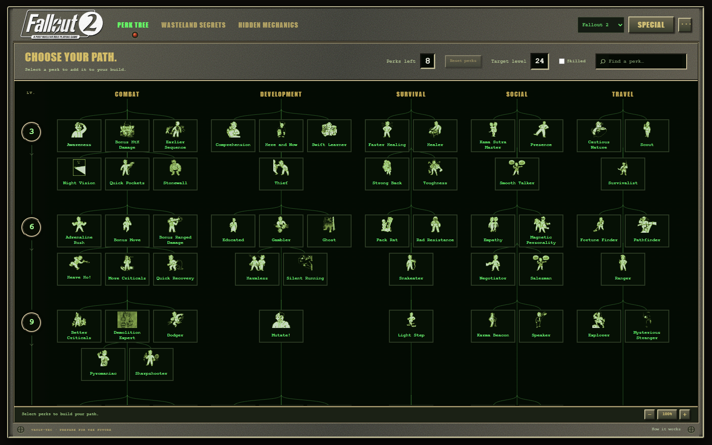
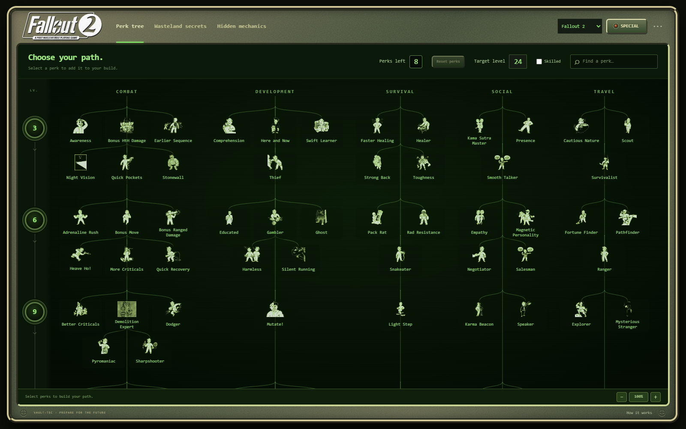

A · Character screen
Gray metal, yellow headings, black panels and bright green text.

Both preserve the tree and original artwork. These working HTML previews show a sample build. The main planner now combines elements of both styles.
Gray metal, yellow headings, black panels and bright green text.

Rounded olive casing, a recessed green display and a soft glow.

Both variants work offline with separate saves. Changes in a preview do not affect your main build.